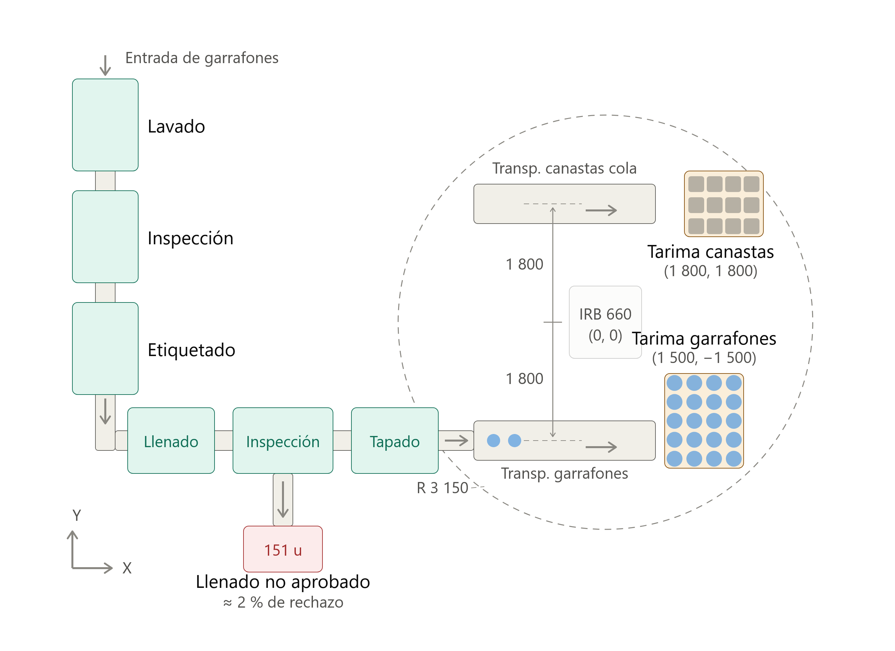
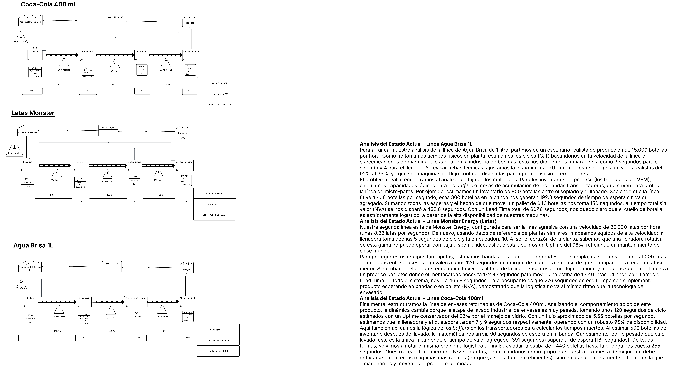
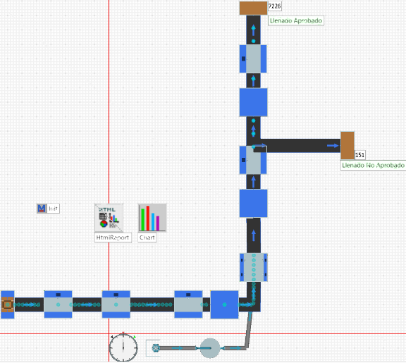

Este módulo consolida el levantamiento en planta embotelladora de referencia (Bogotá), los diagramas analíticos de proceso y los indicadores AS-IS que alimentan el modelo de simulación y las propuestas de mejora.
Vista de Planta

Flujo General del Proceso

Visita técnica y productos
A partir de la visita técnica a la planta embotelladora de referencia en Bogotá y los fundamentos teóricos abordados en el módulo, se analizan las dos líneas de producción de la planta: gaseosa cola en botella de vidrio retornable de 400 ml (empacada en canastas de 24) y agua en garrafón retornable de 20 L.
Diagrama de Análisis de Proceso (DAP)
Se elaboró el Diagrama de Análisis de Proceso (formato Flow Process Chart, norma ASME) de la línea de gaseosa 400 mL retornable, documentando operaciones, transportes, inspecciones y almacenamientos.
| # | Descripción | Cantidad | Distancia (m) | Tiempo (s) | Tipo de elemento | Observaciones | ||||
|---|---|---|---|---|---|---|---|---|---|---|
| 1 | Saneamiento previo a cambio de sabor | Única vez | — | 2-3 hs | ● | Depende del producto anterior | ||||
| 2 | Recepción de agua de red o pozo | 1 Lote | 50 | 259,2 | ● | Agua acueducto | ||||
| 3 | Tratamiento y purificación del agua (filtración, carbón activado, UV) | 1 Lote | — | 259,2 | ● | |||||
| 4 | Control de calidad del agua | 1 muestra | — | 30 | ● | pH, conductividad | ||||
| 5 | Refinamiento de azúcar | 1 lote | — | 240 | ● | |||||
| 6 | Preparación del jarabe simple (agua + azúcar) | 1 Lote | — | 259,2 | ● | Disolución azúcar | ||||
| 7 | Mezcla con concentrado de sabor (jarabe terminado) | 1 Lote | — | 259,2 | ● | |||||
| 8 | Verificación del jarabe | 1 muestra | — | 20 | ● | Medición de °Brix | ||||
| 9 | Envío del jarabe a tanque de mezcla | 1 Lote | 6 | 100 | ● | Bombeo por tubería | ||||
| 10 | Enfriamiento del jarabe | 1 Lote | — | 259,2 | ● | |||||
| 11 | Carbonatación (mezcla con CO₂) | 1 Lote | — | 30 | ● | Proceso en carbonatador | ||||
| 12 | Envío a línea de llenado | 1 Lote | 8 | 8 | ● | |||||
| 13 | Recepción de botellas de vidrio retornables | 1 Botella | — | 0,18 | ● | |||||
| 14 | Rectificado de etiquetado | 1 Botella | — | 0,18 | ● | Cuando es necesario se corrige la impresión | ||||
| 15 | Lavado y desinfección de botellas | 1 Botella | — | 0,18 | ● | Lavadora industrial | ||||
| 16 | Inspección automática de botellas | 1 Botella | — | 0,18 | ● | Cámaras detectan defectos | ||||
| 17 | Botellas limpias a llenadora | 1 Botella | 20 | 20 | ● | |||||
| 18 | Llenado de bebida (400 ml) | 1 Botella | — | 0,18 | ● | |||||
| 19 | Tapado con tapa corona | 1 Botella | — | 0,15 | ● | |||||
| 20 | Verificación de nivel y sellado | 1 Botella | — | 0,1 | ● | Sensor o visión artificial | ||||
| 21 | Codificación de lote y fecha | 1 Botella | — | 0,12 | ● | |||||
| 22 | Control final de calidad | 1 Muestra | — | 30 | ● | |||||
| 23 | Transporte a bodega | 1 botella | 100 | 100 | ● | Bandas muy largas | ||||
| 24 | Empaque en canastillas | 24 botellas | — | 4,32 | ● | |||||
| 25 | Almacenamiento en bodega | 1 lote | — | 255 | ● | 1440 u en palets | ||||
Operaciones: 15 · Transportes: 4 · Inspecciones: 5 · Almacenamientos: 1 (sin Demoras)
Indicadores AS-IS
Se calcularon los indicadores de manufactura de cada línea, obteniendo un OEE AS-IS de 71,4% en la línea de gaseosa y 73,4% en la de garrafón.
| Indicador | Gaseosa 400ml | Garrafón 20L |
|---|---|---|
| Demanda mínima | 20,000 bot/h | 900 u/h |
| Takt time | 0.18 s/bot | 4.0 s/u |
| Tasa de producción | 16,180 bot/h | 864 u/h |
| Disponibilidad (A) | 92.0% | 92.4% |
| Rendimiento (PE) | 80.9% | 82.2% |
| Calidad (QR) | 96.0% | 96.7% |
| OEE (A × PE × QR) | 71.4% | 73.4% |
Value Stream Mapping (VSM)
Se elaboraron mapas de flujo de valor (VSM) estado actual para cada línea. La conclusión principal del equipo fue que el cuello de botella es logístico, no en las máquinas: los tiempos de movimiento y paletizado representan la mayor proporción de tiempo sin valor agregado.
Gaseosa 400ml. La etapa de lavado industrial toma ~120s de ciclo con 95% uptime. Con flujo de 5.55 bot/s, la llenadora y etiquetadora tardan 7s y 9s respectivamente (98% y 95% uptime). El Lead Time cierra en 572s, confirmando que la mejora debe enfocarse en almacenamiento y movimiento de producto terminado.
Garrafón 20L. 900 u/h. Línea de gran volumen con takt de 4.0 s/u.
Línea 1: Gaseosa Carbonatada 400 mL

Línea 2: Garrafón de agua 20 L
Diseño TO-BE
El estado futuro conserva las estaciones automatizadas de ambas líneas e introduce dos mejoras de automatización en los puntos manuales críticos del fin de línea, identificados en el VSM y en los diagramas de proceso.
- Mejora 1 — Actuador neumático de tapado de garrafones: un cilindro neumático de prensado (tipo press-on) reemplaza el tapado manual con un ciclo de 0,30 s por garrafón —muy por debajo del takt de 4 s—, con fuerza de sellado uniforme y verificable, y sin contacto manual con la boquilla del envase.
- Mejora 2 — Celda robotizada de paletizado (ABB IRB 660): un único robot central paletiza en paralelo las canastas de gaseosa y los garrafones, eliminando el paletizado manual y dando continuidad al flujo hasta el pallet.
| Variable | AS-IS | TO-BE |
|---|---|---|
| Tapado de garrafones | Manual: 1 operario coloca la tapa cada 4 s | Actuador neumático, 0,30 s/ciclo, sin intervención humana |
| Paletizado (ambas líneas) | Manual, sin solución definida | Celda robotizada IRB 660 compartida |
| Operarios en tareas manuales críticas | 4 por turno (12 por día) | 2 por turno (6 por día) |
| Carga manipulada en paletizado | ≈ 36 t/h entre ambas líneas | 0 t/h (paletizado automatizado) |
| Riesgo ergonómico | Alto: cargas de 20–21 kg a alta frecuencia | Eliminado en tapado y paletizado |
| Continuidad del flujo | Interrumpida al final de línea | Flujo continuo hasta el pallet |
Ir a Celdas Robotizadas — Balance de ciclos →
Simulación de eventos discretos
El modelo de simulación permite cuantificar el impacto de cambios logísticos y de balanceo de línea antes de comprometer CAPEX, cerrando el ciclo entre diagnóstico VSM, DAP e indicadores.
- Corridas AS-IS calibradas frente a tiempos de proceso y colas observados.
- Experimentos TO-BE (buffers, rutas internas, políticas de paletizado).
- Anexo de supuestos, réplicas y validación estadística básica.
Throughput y OEE simulados

Archivos de simulación (Tecnomatix Plant Simulation)
Próximos pasos: El equipo debe abrir el archivo .spp en Tecnomatix Plant Simulation y exportar: (1) screenshot del layout 2D del modelo, (2) gráfica de estados por estación, (3) resultados de throughput/OEE, y opcionalmente (4) video de la animación de simulación.
Videos del Módulo
Material audiovisual de gestión de producción.